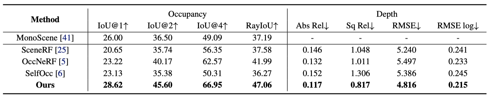
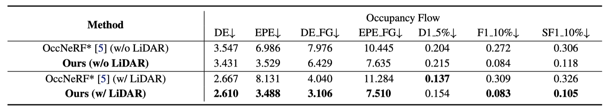
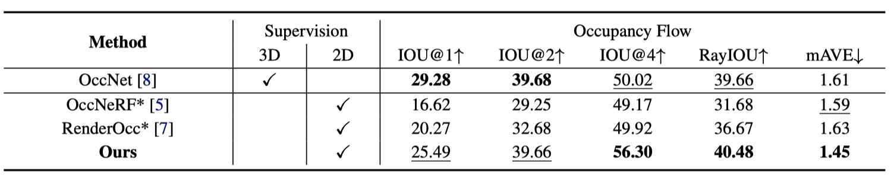

Accurate perception of the dynamic environment is a fundamental task for autonomous driving and robot systems. This paper introduces Let Occ Flow, the first self-supervised work for joint 3D occupancy and occupancy flow prediction using only camera inputs, eliminating the need for 3D annotations. Utilizing TPV for unified scene representation and deformable attention layers for feature aggregation, our approach incorporates a backward-forward temporal attention module to capture dynamic object dependencies, followed by a 3D refine module for fine-gained volumetric representation. Besides, our method extends differen- tiable rendering to 3D volumetric flow fields, leveraging zero-shot 2D segmenta- tion and optical flow cues for dynamic decomposition and motion optimization. Extensive experiments on nuScenes and KITTI datasets demonstrate the compet- itive performance of our approach over prior state-of-the-art methods.
The overall architecture of Let Occ Flow. We employ deformable-attention layers to integrate multi-view image input into TPV representation. The temporal fusion module utilizes BEV-based backward-forward attention to fuse temporal feature volumes. The 3D Refine Module further aggregates spatial features and upsample the fused volume into a high-solution representation. Then we apply two separate MLP decoders to construct volumetric SDF and flow fields, and finally perform self-supervised occupancy flow learning utilizing reprojection consistency, optical flow cues, and optional LiDAR ray supervision via differentiable rendering.
We show the results for depth estimation, 3D occupancy and occupancy flow prediction on the KITTI dataset. Our method can predict visually appealing depth maps, fine-grained occupancy, and accurate dynamic decomposition and motion estimation
As reported, our method sets the new state-of-the-art for 3D occupancy prediction and depth estimation tasks without any form of 3D supervision compared with other supervised and self-supervised approaches. Thanks to our effective spatial-temporal feature aggregation and the integration of optical flow cues for supervision, our method greatly enhances the geometric representation capabilities, compared to other rendering-based methods.
We report the results of occupancy flow prediction as follows. Compared to other rendering-based methods, our approach performs much better on both KITTI-MOT and nuScenes dataset, owing to our effective temporal fusion module and flow-oriented optimization strategy. And compared with 3D supervised OccNet, our approach achieves comparable performance on nuScenes, validating the effectiveness of our self-supervised training paradigm.
 